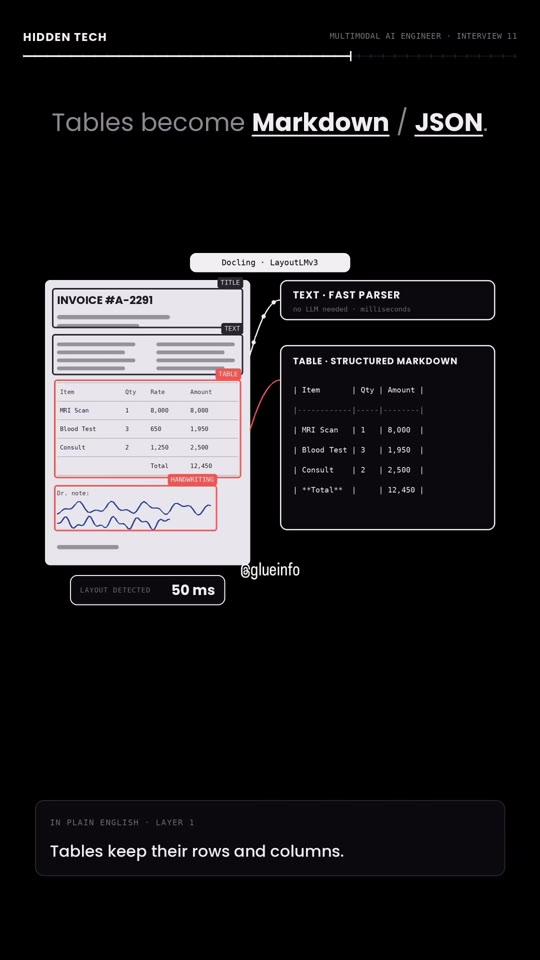
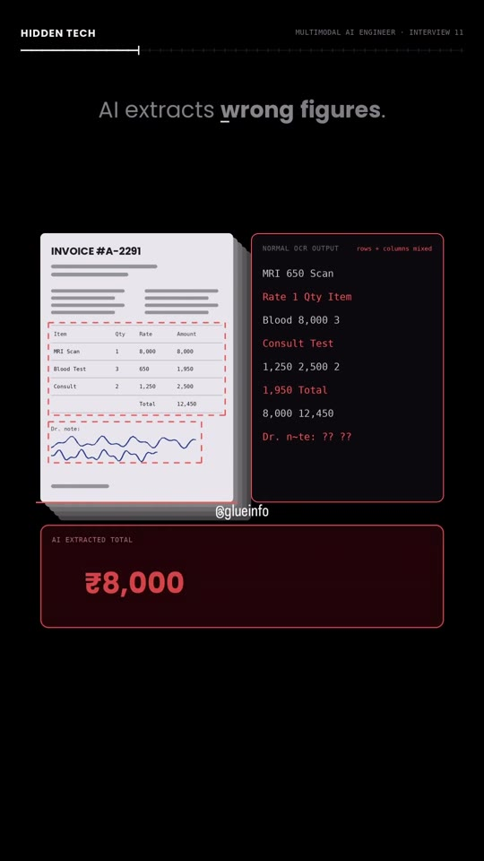
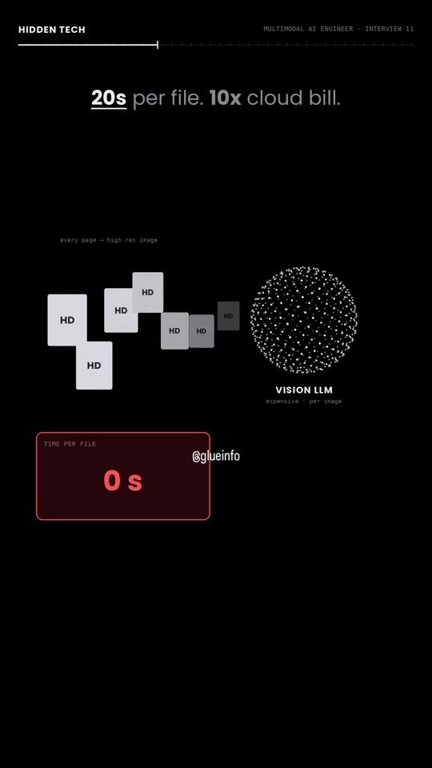
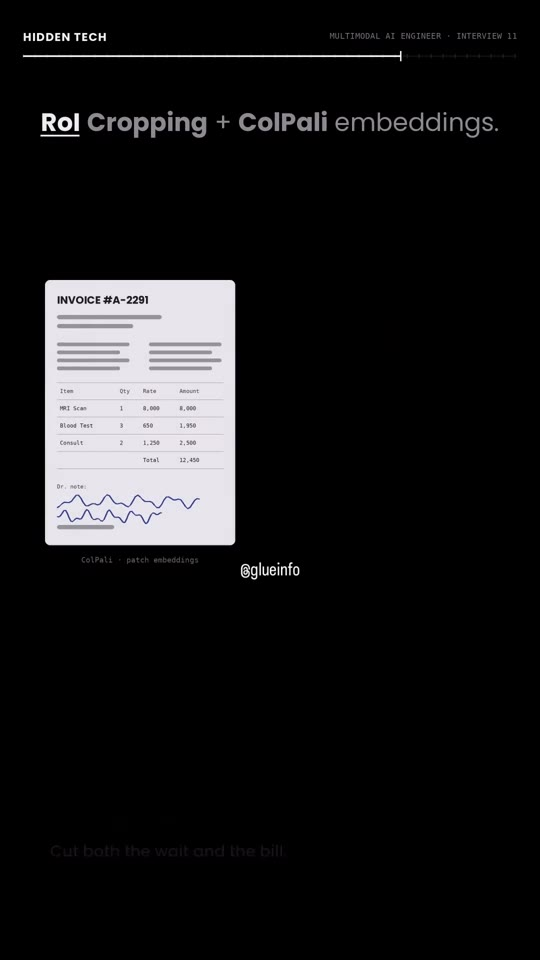

AI · Document-AI
High-Throughput Multimodal Document Parsing System Design
Library / AI / Document-AI
An architectural solution to a senior Multimodal AI Engineer interview scenario: ingesting 500,000+ financial invoices and medical records daily without suffering the 20-second latency and 10x cloud billing penalty of brute-force Vision LLMs. The design introduces a 2-tier layout-aware pipeline: 50ms structural segmentation via Docling/LayoutLMv3 that serializes multi-column tables into structured Markdown/JSON (elevating accuracy from 61% to 99%), followed by Region-of-Interest (RoI) cropping and ColPali visual patch embeddings to slash latency and API overhead by 80%.

Steps
- Recognize OCR 1D Flattening Failure: Standard optical character recognition (OCR) flattens 2D visual layouts into sequential linear text, blending adjacent table columns (rates, quantities, totals) and causing downstream LLMs to extract inaccurate values (e.g. extracting ₹8,000 instead of ₹12,450). (00:14–00:26)
- Avoid Full-Page Vision LLM Ingestion: Ingesting raw high-resolution page images directly into multimodal Vision LLMs incurs severe production penalties: ~20 seconds of latency per page and a 10x API cost multiplier at 500,000+ daily volume. (00:27–00:38)
- Deploy Layer 1 — Layout-Aware Document Parsing: Use a lightweight visual layout model (such as
DoclingorLayoutLMv3) that parses page topology in 50ms into explicit bounding regions: Titles, Text, Tables, and Handwritten Notes. (00:54–01:05) - Structure Tables into Markdown/JSON: Route plain body text to fast deterministic parsers (milliseconds, zero LLM cost). Convert complex multi-column grids into structured Markdown (
| Item | Qty | Amount |) or JSON schemas prior to LLM submission, increasing extraction accuracy from 61% to 99%. (01:06–01:19) - Deploy Layer 2 — RoI Cropping & ColPali Embeddings: To achieve a target 80% reduction in latency and compute, extract specific visual Regions of Interest (RoI) and compute patch-level multi-vector visual representations via
ColPalirather than vectorizing entire page canvases. (01:20–01:28)



Verbatim
| When | Where | Text |
|---|---|---|
| 00:00–00:02 | screen | HIDDEN TECH · MULTIMODAL AI ENGINEER · INTERVIEW 11 Multimodal AI Engineer. 40 LPA interview. |
| 00:07–00:11 | screen | Lakhs of invoices + medical PDFs. Daily. DOCS SCANNED / DAY: 500,000+ FINANCIAL INVOICES · MEDICAL PDFs |
| 00:14–00:17 | screen | Multi-column tables. Handwritten notes. HARD CASES: multi-column tables, handwritten notes |
| 00:20–00:25 | screen | Normal OCR mixes rows and columns. NORMAL OCR OUTPUT: rows + columns mixed AI extracts wrong figures. AI EXTRACTED TOTAL: ₹8,000 ✕ (Actual: ₹12,450) |
| 00:28–00:38 | screen | Every page to a Vision LLM? every page -> high-res image -> VISION LLM (expensive - per image) 20s per file. 10x cloud bill. |
| 00:40–00:44 | screen | Most say: another OCR or compress images. NAIVE: ANOTHER OCR TOOL (same flat text) · COMPRESS IMAGES (numbers get blurry) |
| 00:54–01:05 | screen | Layer 1: Layout-Aware Document Parsing Docling · LayoutLMv3 Page structure detected in 50ms. IN PLAIN ENGLISH - LAYER 1: First understand the page. Then read it. A tiny model maps title, text, table, notes. |
| 01:08–01:19 | screen | Plain text goes to a fast parser. TEXT - FAST PARSER (no LLM needed · milliseconds) Tables become Markdown / JSON. TABLE - STRUCTURED MARKDOWN: | Item | Qty | Amount | ... -> LLM No mixing. Accuracy 99%. EXTRACTION ACCURACY: 61% -> 75% -> 93% -> 99% |
| 01:22–01:28 | screen | Layer 2: -80% latency and cost. LATENCY: 20s (Target: -80%) · API COST: 10x (Target: -80%) RoI Cropping + ColPali embeddings. ColPali · patch embeddings IN PLAIN ENGLISH - LAYER 2: Find the hard parts of the page first. Cut both the wait and the bill. |
Tools & links
- Docling — Lightweight document layout analysis & PDF-to-Markdown engine by IBM — github.com/DS4SD/docling
- LayoutLMv3 — Multimodal pre-trained model for visually rich document understanding — github.com/microsoft/unilm
- ColPali — Efficient document retrieval using multi-vector vision language models on image patches — github.com/illuin-tech/colpali
- Creator profile — @glueinfo6006 (Glue Info) — instagram.com/glueinfo6006
Try this
- Benchmark
Doclingon a messy multi-column invoice PDF to verify table preservation before piping content into an LLM. - Implement RoI bounding box cropping on dense document sections to evaluate token cost reduction against full-page vision API calls.
Open questions
The reel presents a high-level system design architecture for 500,000+ daily documents. In production, handwriting recognition ("Dr. note") typically requires specialized fine-tuned models or targeted VLM crops, as layout models primarily delineate regions rather than transcribe cursive medical handwriting.